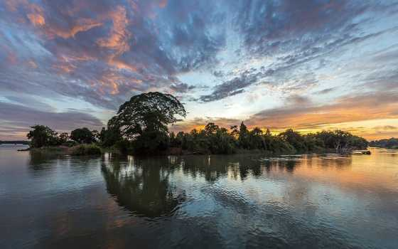
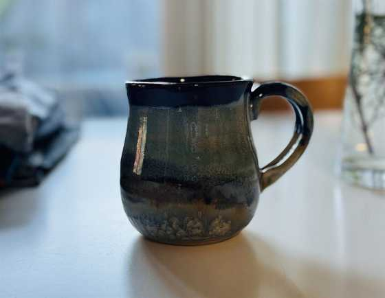
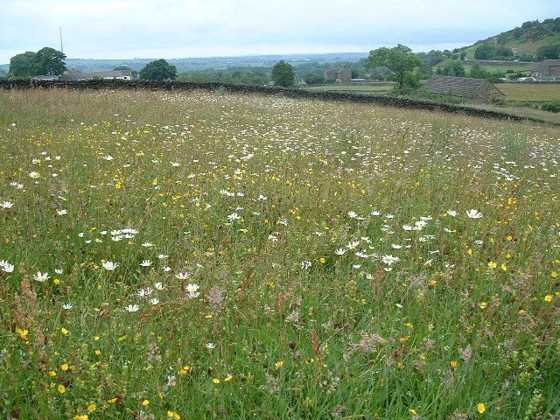

ゆうゆうかんかん
悠々閑々
のんびり、ゆったり。朝の一杯から昼のごはんまで、急がない時間をひとり分から。
店のこと
店名のとおりの、穏やかな時間を。
悠々閑々は、高知県四万十市荒川にある小さな食堂です。紹介記事によると、2024年8月にオープン。店名は「のんびりとして落ち着いている様子を表す言葉」とされ、店内はテーブル席1卓とカウンター席のみ、木の温もりを感じる素朴な空間で、一人でも立ち寄りやすいと紹介されています。
情報源: eimons(紹介記事)/Instagram/Yahoo!マップ
見出しやキャッチコピーの言い回しは制作側のイメージです。オーナー様の想いや開店の経緯は確認できていないため、載せていません。


お品書き
朝ごはん、お昼の定食、プリン。

情報源: eimons(紹介記事)。内容は変わることがあります。価格・閉店時間・定休日: 準備中



口コミ(イメージ例)
こんな声が届くお店に。
以下は制作側が作成したイメージ例で、実在のお客様の声ではありません。
イメージ例朝の静かな時間に、ゆっくりモーニングをいただきました。一人でも気兼ねなく過ごせます。
ご来店のお客様(イメージ)
イメージ例お昼の定食の小鉢がうれしくて、ほっとする味でした。食後のプリンも楽しみです。
ご来店のお客様(イメージ)
イメージ例木の落ち着いた店内で、急がずに過ごせました。また寄りたくなる場所です。
ご来店のお客様(イメージ)
アクセス
四万十市荒川で、お待ちしています。
| 所在地 | 〒787-0668 高知県四万十市荒川1290-1 |
|---|---|
| 電話 | 準備中 |
| 営業時間 | モーニング7時〜10時、ランチ11時〜(閉店時間: 準備中) |
| 定休日 | 準備中 |
| 駐車場 | 周辺にあるとされています。詳細はInstagramをご確認ください。 |
| SNS | Instagram @yu_yu_kan_kan |
